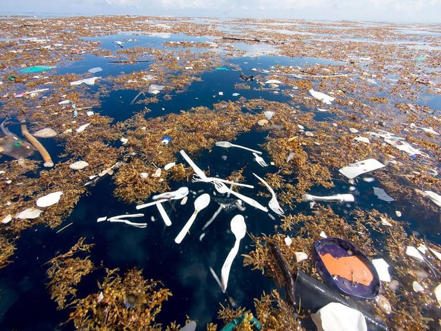
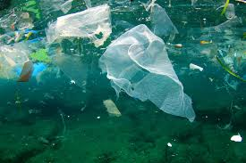
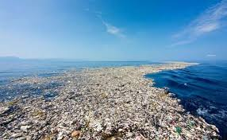

Our purpose is to provide a better alternative to plastic utensils that cause waste while also creating a fun and enthusiastic experience for the user with our edible biodegradable utensils you could help reduce plastic waste and at the same time brighten up your meal! It's our goal to be part of the solution to eliminating plastic waste, not the problem.
Did you know there are over 6 million tonnes of single use plastic like plastic forks, spoons, and knives that get dumped into the ocean every year.
Plastic is one of the most common ocean pollutants. There are dead zones in the oceans that have been created by pollution which is making life in those zones impossible for plants and animals.
You can add that the Pacific Garbage patch is already larger than Texas, the second largest state in America.
Replacing plastic with food could help humankind to save the enivronment. By now, you may have gotten used to using plastic spoons to scoop up your food. After all, they are cheap, and can easily be thrown away after you have finished snacking. But when they are thrown away, they add to an increasingly worrying amount of plastic waste that stays in the environment, never to leave. We could just hold onto the spoons, but that would ruin the point of them being disposable. Yet, we should not just leave them to harm our world. But what if there was an alternative to the plastic spoons? An alternative that would not pollute the environment, but still remain convenient? That still remains cheap and dependable? Perhaps, it could be simply eaten like a cookie, after being used? This alternative, is the Spoonable.